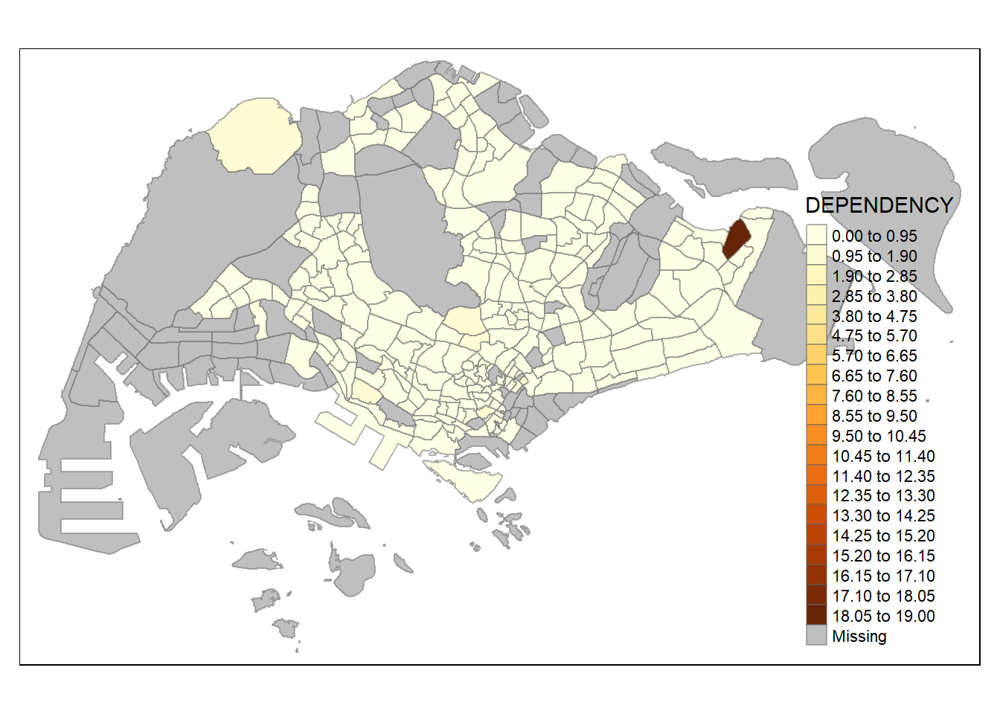
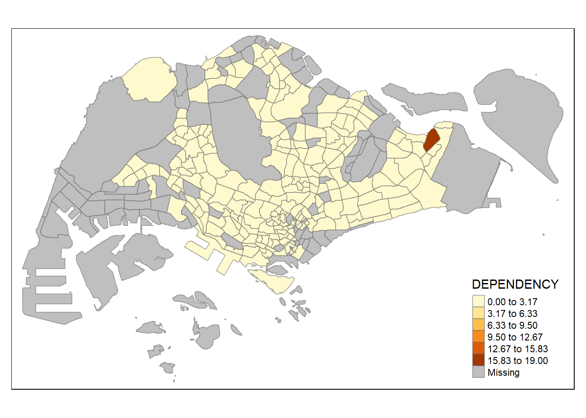
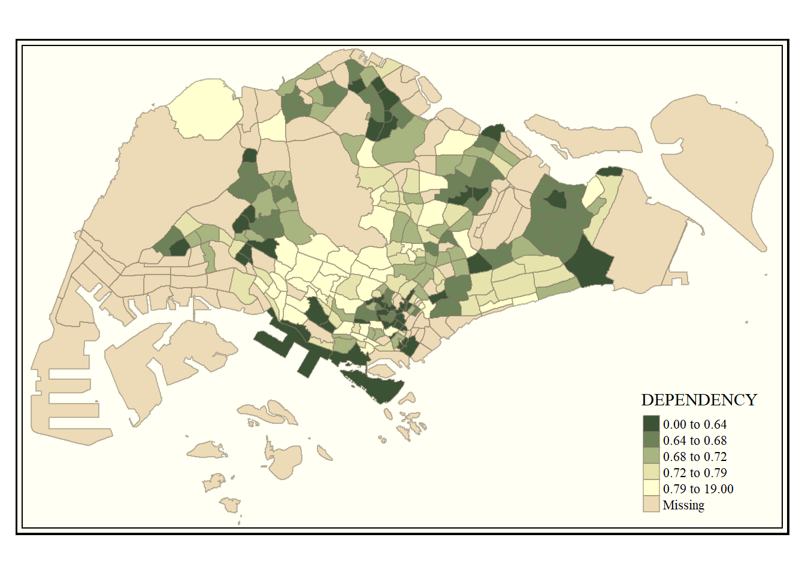

packages = c('sf','tidyverse')Hands-on Ex1p2
2 Choropleth Mapping with R
2.1 Overview
Choropleth mapping involves the symbolisation of enumeration units, such as countries, provinces, states, counties or census units, using area patterns or graduated colors. For example, a social scientist may need to use a choropleth map to portray the spatial distribution of aged population of Singapore by Master Plan 2014 Subzone Boundary.
In this chapter, you will learn how to plot functional and truthful choropleth maps by using an R package called **tmap** package.
2.1.1 Survival Tip
It is advisable for you to read the functional description of each function before using them.
2.2 Getting Started
In this hands-on exercise, the key R package use is tmap package in R. Beside tmap package, four other R packages will be used. They are:
readr for importing delimited text file,
tidyr for tidying data,
dplyr for wrangling data and
sf for handling geospatial data.
Among the four packages, readr, tidyr and dplyr are part of tidyverse package.
The code chunk below will be used to install and load these packages in RStudio.
pacman::p_load(sf, tmap, tidyverse)Notice that, we only need to install tidyverse instead of readr, tidyr and dplyr individually.
2.3 Importing Data into R
2.3.1 The Data
Two data set will be used to create the choropleth map. They are:
Master Plan 2014 Subzone Boundary (Web) (i.e.
MP14_SUBZONE_WEB_PL) in ESRI shapefile format. It can be downloaded at data.gov.sg This is a geospatial data. It consists of the geographical boundary of Singapore at the planning subzone level. The data is based on URA Master Plan 2014.Singapore Residents by Planning Area / Subzone, Age Group, Sex and Type of Dwelling, June 2011-2020 in csv format (i.e.
respopagesextod2011to2020.csv). This is an aspatial data fie. It can be downloaded at Department of Statistics, Singapore Although it does not contain any coordinates values, but it's PA and SZ fields can be used as unique identifiers to geocode toMP14_SUBZONE_WEB_PLshapefile.
2.3.2 Importing Geospatial Data into R
The code chunk below uses the st_read() function of sf package to import MP14_SUBZONE_WEB_PL shapefile into R as a simple feature data frame called mpsz.
mpsz <- st_read(dsn = "data/geospatial",
layer = "MP14_SUBZONE_WEB_PL")Reading layer `MP14_SUBZONE_WEB_PL' from data source
`D:\yuetongz\ISSS624\data\geospatial' using driver `ESRI Shapefile'
Simple feature collection with 323 features and 15 fields
Geometry type: MULTIPOLYGON
Dimension: XY
Bounding box: xmin: 2667.538 ymin: 15748.72 xmax: 56396.44 ymax: 50256.33
Projected CRS: SVY21You can examine the content of mpsz by using the code chunk below.
mpszSimple feature collection with 323 features and 15 fields
Geometry type: MULTIPOLYGON
Dimension: XY
Bounding box: xmin: 2667.538 ymin: 15748.72 xmax: 56396.44 ymax: 50256.33
Projected CRS: SVY21
First 10 features:
OBJECTID SUBZONE_NO SUBZONE_N SUBZONE_C CA_IND PLN_AREA_N
1 1 1 MARINA SOUTH MSSZ01 Y MARINA SOUTH
2 2 1 PEARL'S HILL OTSZ01 Y OUTRAM
3 3 3 BOAT QUAY SRSZ03 Y SINGAPORE RIVER
4 4 8 HENDERSON HILL BMSZ08 N BUKIT MERAH
5 5 3 REDHILL BMSZ03 N BUKIT MERAH
6 6 7 ALEXANDRA HILL BMSZ07 N BUKIT MERAH
7 7 9 BUKIT HO SWEE BMSZ09 N BUKIT MERAH
8 8 2 CLARKE QUAY SRSZ02 Y SINGAPORE RIVER
9 9 13 PASIR PANJANG 1 QTSZ13 N QUEENSTOWN
10 10 7 QUEENSWAY QTSZ07 N QUEENSTOWN
PLN_AREA_C REGION_N REGION_C INC_CRC FMEL_UPD_D X_ADDR
1 MS CENTRAL REGION CR 5ED7EB253F99252E 2014-12-05 31595.84
2 OT CENTRAL REGION CR 8C7149B9EB32EEFC 2014-12-05 28679.06
3 SR CENTRAL REGION CR C35FEFF02B13E0E5 2014-12-05 29654.96
4 BM CENTRAL REGION CR 3775D82C5DDBEFBD 2014-12-05 26782.83
5 BM CENTRAL REGION CR 85D9ABEF0A40678F 2014-12-05 26201.96
6 BM CENTRAL REGION CR 9D286521EF5E3B59 2014-12-05 25358.82
7 BM CENTRAL REGION CR 7839A8577144EFE2 2014-12-05 27680.06
8 SR CENTRAL REGION CR 48661DC0FBA09F7A 2014-12-05 29253.21
9 QT CENTRAL REGION CR 1F721290C421BFAB 2014-12-05 22077.34
10 QT CENTRAL REGION CR 3580D2AFFBEE914C 2014-12-05 24168.31
Y_ADDR SHAPE_Leng SHAPE_Area geometry
1 29220.19 5267.381 1630379.3 MULTIPOLYGON (((31495.56 30...
2 29782.05 3506.107 559816.2 MULTIPOLYGON (((29092.28 30...
3 29974.66 1740.926 160807.5 MULTIPOLYGON (((29932.33 29...
4 29933.77 3313.625 595428.9 MULTIPOLYGON (((27131.28 30...
5 30005.70 2825.594 387429.4 MULTIPOLYGON (((26451.03 30...
6 29991.38 4428.913 1030378.8 MULTIPOLYGON (((25899.7 297...
7 30230.86 3275.312 551732.0 MULTIPOLYGON (((27746.95 30...
8 30222.86 2208.619 290184.7 MULTIPOLYGON (((29351.26 29...
9 29893.78 6571.323 1084792.3 MULTIPOLYGON (((20996.49 30...
10 30104.18 3454.239 631644.3 MULTIPOLYGON (((24472.11 29...Notice that only the first ten records will be displayed. Do you know why?
2.3.3 Importing Attribute Data into R
Next, we will import respopagsex2000to2018.csv file into RStudio and save the file into an R dataframe called popagsex.
The task will be performed by using read_csv() function of readr package as shown in the code chunk below.
popdata <- read_csv("data/aspatial/respopagesextod2011to2020.csv")Rows: 984656 Columns: 7
── Column specification ────────────────────────────────────────────────────────
Delimiter: ","
chr (5): PA, SZ, AG, Sex, TOD
dbl (2): Pop, Time
ℹ Use `spec()` to retrieve the full column specification for this data.
ℹ Specify the column types or set `show_col_types = FALSE` to quiet this message.2.3.4 Data Preparation
Before a thematic map can be prepared, you are required to prepare a data table with year 2020 values. The data table should include the variables PA, SZ, YOUNG, ECONOMY ACTIVE, AGED, TOTAL, DEPENDENCY.
YOUNG: age group 0 to 4 until age groyup 20 to 24,
ECONOMY ACTIVE: age group 25-29 until age group 60-64,
AGED: age group 65 and above,
TOTAL: all age group, and
DEPENDENCY: the ratio between young and aged against economy active group
2.3.4.1 Data wrangling
The following data wrangling and transformation functions will be used:
pivot_wider() of tidyr package, and
mutate(), filter(), group_by() and select() of dplyr package
popdata2020 <- popdata %>%
filter(Time == 2020) %>%
group_by(PA, SZ, AG) %>%
summarise(`POP` = sum(`Pop`)) %>%
ungroup()%>%
pivot_wider(names_from=AG,
values_from=POP) %>%
mutate(YOUNG = rowSums(.[3:6])
+rowSums(.[12])) %>%
mutate(`ECONOMY ACTIVE` = rowSums(.[7:11])+
rowSums(.[13:15]))%>%
mutate(`AGED`=rowSums(.[16:21])) %>%
mutate(`TOTAL`=rowSums(.[3:21])) %>%
mutate(`DEPENDENCY` = (`YOUNG` + `AGED`)
/`ECONOMY ACTIVE`) %>%
select(`PA`, `SZ`, `YOUNG`,
`ECONOMY ACTIVE`, `AGED`,
`TOTAL`, `DEPENDENCY`)`summarise()` has grouped output by 'PA', 'SZ'. You can override using the
`.groups` argument.2.3.4.2 Joining the attribute data and geospatial data
Before we can perform the georelational join, one extra step is required to convert the values in PA and SZ fields to uppercase. This is because the values of PA and SZ fields are made up of upper- and lowercase. On the other, hand the SUBZONE_N and PLN_AREA_N are in uppercase.
popdata2020 <- popdata2020 %>%
mutate_at(.vars = vars(PA, SZ),
.funs = funs(toupper)) %>%
filter(`ECONOMY ACTIVE` > 0)Warning: `funs()` was deprecated in dplyr 0.8.0.
ℹ Please use a list of either functions or lambdas:
# Simple named list: list(mean = mean, median = median)
# Auto named with `tibble::lst()`: tibble::lst(mean, median)
# Using lambdas list(~ mean(., trim = .2), ~ median(., na.rm = TRUE))Next, left_join() of dplyr is used to join the geographical data and attribute table using planning subzone name e.g. SUBZONE_N and SZ as the common identifier.
mpsz_pop2020 <- left_join(mpsz, popdata2020,
by = c("SUBZONE_N" = "SZ"))Thing to learn from the code chunk above:
- left_join() of dplyr package is used with
mpszsimple feature data frame as the left data table is to ensure that the output will be a simple features data frame.
write_rds(mpsz_pop2020, "data/rds/mpszpop2020.rds")2.4 Choropleth Mapping Geospatial Data Using tmap
Two approaches can be used to prepare thematic map using tmap, they are:
Plotting a thematic map quickly by using qtm().
Plotting highly customisable thematic map by using tmap elements.
2.4.1 Plotting a choropleth map quickly by using qtm()
The easiest and quickest to draw a choropleth map using tmap is using qtm(). It is concise and provides a good default visualisation in many cases.
The code chunk below will draw a cartographic standard choropleth map as shown below.
tmap_mode("plot")tmap mode set to plottingqtm(mpsz_pop2020,
fill = "DEPENDENCY")

Things to learn from the code chunk above:
tmap_mode() with "plot" option is used to produce a static map. For interactive mode, "view" option should be used.
fill argument is used to map the attribute (i.e. DEPENDENCY)
2.4.2 Creating a choropleth map by using tmap's elements
Despite its usefulness of drawing a choropleth map quickly and easily, the disadvantge of qtm() is that it makes aesthetics of individual layers harder to control. To draw a high quality cartographic choropleth map as shown in the figure below, tmap's drawing elements should be used.
tm_shape(mpsz_pop2020)+
tm_fill("DEPENDENCY",
style = "quantile",
palette = "Blues",
title = "Dependency ratio") +
tm_layout(main.title = "Distribution of Dependency Ratio by planning subzone",
main.title.position = "center",
main.title.size = 1.2,
legend.height = 0.45,
legend.width = 0.35,
frame = TRUE) +
tm_borders(alpha = 0.5) +
tm_compass(type="8star", size = 2) +
tm_scale_bar() +
tm_grid(alpha =0.2) +
tm_credits("Source: Planning Sub-zone boundary from Urban Redevelopment Authorithy (URA)\n and Population data from Department of Statistics DOS",
position = c("left", "bottom"))

In the following sub-section, we will share with you tmap functions that used to plot these elements.
2.4.2.1 Drawing a base map
The basic building block of tmap is tm_shape() followed by one or more layer elemments such as tm_fill() and tm_polygons().
In the code chunk below, tm_shape() is used to define the input data (i.e mpsz_pop2020) and tm_polygons() is used to draw the planning subzone polygons
tm_shape(mpsz_pop2020) + tm_polygons()

2.4.2.2 Drawing a choropleth map using tm_polygons()
To draw a choropleth map showing the geographical distribution of a selected variable by planning subzone, we just need to assign the target variable such as Dependency to tm_polygons().
tm_shape(mpsz_pop2020)+ tm_polygons("DEPENDENCY")

Things to learn from tm_polygons():
The default interval binning used to draw the choropleth map is called "pretty". A detailed discussion of the data classification methods supported by tmap will be provided in sub-section 4.3.
The default colour scheme used is
YlOrRdof ColorBrewer. You will learn more about the color scheme in sub-section 4.4.By default, Missing value will be shaded in grey.
2.4.2.3 Drawing a choropleth map using tm_fill() and *tm_border()**
Actually, tm_polygons() is a wraper of tm_fill() and tm_border(). tm_fill() shades the polygons by using the default colour scheme and tm_borders() adds the borders of the shapefile onto the choropleth map.
The code chunk below draws a choropleth map by using tm_fill() alone.
tm_shape(mpsz_pop2020)+
tm_fill("DEPENDENCY")

Notice that the planning subzones are shared according to the respective dependecy values
To add the boundary of the planning subzones, tm_borders will be used as shown in the code chunk below.
tm_shape(mpsz_pop2020)+
tm_fill("DEPENDENCY") +
tm_borders(lwd = 0.1, alpha = 1)

Notice that light-gray border lines have been added on the choropleth map.
The alpha argument is used to define transparency number between 0 (totally transparent) and 1 (not transparent). By default, the alpha value of the col is used (normally 1).
Beside alpha argument, there are three other arguments for tm_borders(), they are:
col = border colour,
lwd = border line width. The default is 1, and
lty = border line type. The default is "solid".
2.4.3 Data classification methods of tmap
Most choropleth maps employ some methods of data classification. The point of classification is to take a large number of observations and group them into data ranges or classes.
tmap provides a total ten data classification methods, namely: fixed, sd, equal, pretty (default), quantile, kmeans, hclust, bclust, fisher, and jenks.
To define a data classification method, the style argument of tm_fill() or tm_polygons() will be used.
2.4.3.1 Plotting choropleth maps with built-in classification methods
The code chunk below shows a quantile data classification that used 5 classes.
tm_shape(mpsz_pop2020)+
tm_fill("DEPENDENCY",
n = 5,
style = "jenks") +
tm_borders(alpha = 0.5)

In the code chunk below, equal data classification method is used.
tm_shape(mpsz_pop2020)+
tm_fill("DEPENDENCY",
n = 5,
style = "equal") +
tm_borders(alpha = 0.5)

Notice that the distribution of quantile data classification method are more evenly distributed then equal data classification method.
Warning: Maps Lie!
DIY: Using what you had learned, prepare choropleth maps by using different classification methods supported by tmap and compare their differences.
DIY: Preparing choropleth maps by using similar classification method but with different numbers of classes (i.e. 2, 6, 10, 20). Compare the output maps, what observation can you draw?
tm_shape(mpsz_pop2020)+ tm_fill("DEPENDENCY", n = 20, style = "equal") + tm_borders(alpha = 0.5)
tm_shape(mpsz_pop2020)+
tm_fill("DEPENDENCY",
n = 10,
style = "equal") + tm_borders(alpha = 0.5)
tm_shape(mpsz_pop2020)+
tm_fill("DEPENDENCY",
n = 2,
style = "equal") + tm_borders(alpha = 0.5)
tm_shape(mpsz_pop2020)+
tm_fill("DEPENDENCY",
n = 6,
style = "equal") + tm_borders(alpha = 0.5)
2.4.3.2 Plotting choropleth map with custome break
For all the built-in styles, the category breaks are computed internally. In order to override these defaults, the breakpoints can be set explicitly by means of the breaks argument to the tm_fill(). It is important to note that, in tmap the breaks include a minimum and maximum. As a result, in order to end up with n categories, n+1 elements must be specified in the breaks option (the values must be in increasing order).
Before we get started, it is always a good practice to get some descriptive statistics on the variable before setting the break points. Code chunk below will be used to compute and display the descriptive statistics of DEPENDENCY field.
summary(mpsz_pop2020$DEPENDENCY) Min. 1st Qu. Median Mean 3rd Qu. Max. NA's
0.0000 0.6519 0.7025 0.7742 0.7645 19.0000 92 With reference to the results above, we set break point at 0.60, 0.70, 0.80, and 0.90. In addition, we also need to include a minimum and maximum, which we set at 0 and 100. Our breaks vector is thus c(0, 0.60, 0.70, 0.80, 0.90, 1.00)
Now, we will plot the choropleth map by using the code chunk below.
tm_shape(mpsz_pop2020)+
tm_fill("DEPENDENCY",
breaks = c(0, 0.60, 0.70, 0.80, 0.90, 1.00)) +
tm_borders(alpha = 0.5)Warning: Values have found that are higher than the highest break

2.4.4 Colour Scheme
tmap supports colour ramps either defined by the user or a set of predefined colour ramps from the RColorBrewer package.
2.4.4.1 Using ColourBrewer palette
To change the colour, we assign the preferred colour to palette argument of tm_fill() as shown in the code chunk below.
tm_shape(mpsz_pop2020)+
tm_fill("DEPENDENCY",
n = 6,
style = "quantile",
palette = "Blues") +
tm_borders(alpha = 0.5)

Notice that the choropleth map is shaded in green.
To reverse the colour shading, add a "-" prefix.
tm_shape(mpsz_pop2020)+
tm_fill("DEPENDENCY",
style = "quantile",
palette = "-Greens") +
tm_borders(alpha = 0.5)

Notice that the colour scheme has been reversed.
2.4.5 Map Layouts
Map layout refers to the combination of all map elements into a cohensive map. Map elements include among others the objects to be mapped, the title, the scale bar, the compass, margins and aspects ratios. Colour settings and data classification methods covered in the previous section relate to the palette and break-points are used to affect how the map looks.
2.4.5.1 Map Legend
In tmap, several legend options are provided to change the placement, format and appearance of the legend.
tm_shape(mpsz_pop2020)+
tm_fill("DEPENDENCY",
style = "jenks",
palette = "Blues",
legend.hist = TRUE,
legend.is.portrait = TRUE,
legend.hist.z = 0.1) +
tm_layout(main.title = "Distribution of Dependency Ratio by planning subzone \n(Jenks classification)",
main.title.position = "center",
main.title.size = 1,
legend.height = 0.45,
legend.width = 0.35,
legend.outside = FALSE,
legend.position = c("right", "bottom"),
frame = FALSE) +
tm_borders(alpha = 0.5)

2.4.5.2 Map style
tmap allows a wide variety of layout settings to be changed. They can be called by using tmap_style().
The code chunk below shows the classic style is used.
tm_shape(mpsz_pop2020)+
tm_fill("DEPENDENCY",
style = "quantile",
palette = "-Greens") +
tm_borders(alpha = 0.5) +
tmap_style("classic")tmap style set to "classic"other available styles are: "white", "gray", "natural", "cobalt", "col_blind", "albatross", "beaver", "bw", "watercolor" 

2.4.5.3 Cartographic Furniture
Beside map style, tmap also also provides arguments to draw other map furniture such as compass, scale bar and grid lines.
In the code chunk below, tm_compass(), tm_scale_bar() and tm_grid() are used to add compass, scale bar and grid lines onto the choropleth map.
tm_shape(mpsz_pop2020)+
tm_fill("DEPENDENCY",
style = "quantile",
palette = "Blues",
title = "No. of persons") +
tm_layout(main.title = "Distribution of Dependency Ratio \nby planning subzone",
main.title.position = "center",
main.title.size = 1.2,
legend.height = 0.45,
legend.width = 0.35,
frame = TRUE) +
tm_borders(alpha = 0.5) +
tm_compass(type="8star", size = 2) +
tm_scale_bar(width = 0.15) +
tm_grid(lwd = 0.1, alpha = 0.2) +
tm_credits("Source: Planning Sub-zone boundary from Urban Redevelopment Authorithy (URA)\n and Population data from Department of Statistics DOS",
position = c("left", "bottom"))

To reset the default style, refer to the code chunk below.
tmap_style("white")tmap style set to "white"other available styles are: "gray", "natural", "cobalt", "col_blind", "albatross", "beaver", "bw", "classic", "watercolor" 2.4.6 Drawing Small Multiple Choropleth Maps
Small multiple maps, also referred to as facet maps, are composed of many maps arrange side-by-side, and sometimes stacked vertically. Small multiple maps enable the visualisation of how spatial relationships change with respect to another variable, such as time.
In tmap, small multiple maps can be plotted in three ways:
by assigning multiple values to at least one of the asthetic arguments,
by defining a group-by variable in tm_facets(), and
by creating multiple stand-alone maps with tmap_arrange().
2.4.6.1 By assigning multiple values to at least one of the aesthetic arguments
In this example, small multiple choropleth maps are created by defining ncols in tm_fill()
tm_shape(mpsz_pop2020)+
tm_fill(c("YOUNG", "AGED"),
style = "equal",
palette = "Blues") +
tm_layout(legend.position = c("right", "bottom")) +
tm_borders(alpha = 0.5) +
tmap_style("white")tmap style set to "white"other available styles are: "gray", "natural", "cobalt", "col_blind", "albatross", "beaver", "bw", "classic", "watercolor" 

In this example, small multiple choropleth maps are created by assigning multiple values to at least one of the aesthetic arguments
tm_shape(mpsz_pop2020)+
tm_polygons(c("DEPENDENCY","AGED"),
style = c("equal", "quantile"),
palette = list("Blues","Greens")) +
tm_layout(legend.position = c("right", "bottom"))

2.4.6.2 By defining a group-by variable in tm_facets()
In this example, multiple small choropleth maps are created by using tm_facets().
tm_shape(mpsz_pop2020) +
tm_fill("DEPENDENCY",
style = "quantile",
palette = "Blues",
thres.poly = 0) +
tm_facets(by="REGION_N",
free.coords=TRUE,
drop.shapes=TRUE) +
tm_layout(legend.show = FALSE,
title.position = c("center", "center"),
title.size = 20) +
tm_borders(alpha = 0.5)Warning: The argument drop.shapes has been renamed to drop.units, and is
therefore deprecated

2.4.6.3 By creating multiple stand-alone maps with tmap_arrange()
In this example, multiple small choropleth maps are created by creating multiple stand-alone maps with tmap_arrange().
youngmap <- tm_shape(mpsz_pop2020)+
tm_polygons("YOUNG",
style = "quantile",
palette = "Blues")
agedmap <- tm_shape(mpsz_pop2020)+
tm_polygons("AGED",
style = "quantile",
palette = "Blues")
tmap_arrange(youngmap, agedmap, asp=1, ncol=2)

2.4.7 Mappping Spatial Object Meeting a Selection Criterion
Instead of creating small multiple choropleth map, you can also use selection funtion to map spatial objects meeting the selection criterion.
tm_shape(mpsz_pop2020[mpsz_pop2020$REGION_N=="CENTRAL REGION", ])+
tm_fill("DEPENDENCY",
style = "quantile",
palette = "Blues",
legend.hist = TRUE,
legend.is.portrait = TRUE,
legend.hist.z = 0.1) +
tm_layout(legend.outside = TRUE,
legend.height = 0.45,
legend.width = 5.0,
legend.position = c("right", "bottom"),
frame = FALSE) +
tm_borders(alpha = 0.5)Warning in pre_process_gt(x, interactive = interactive, orig_crs =
gm$shape.orig_crs): legend.width controls the width of the legend within a map.
Please use legend.outside.size to control the width of the outside legend